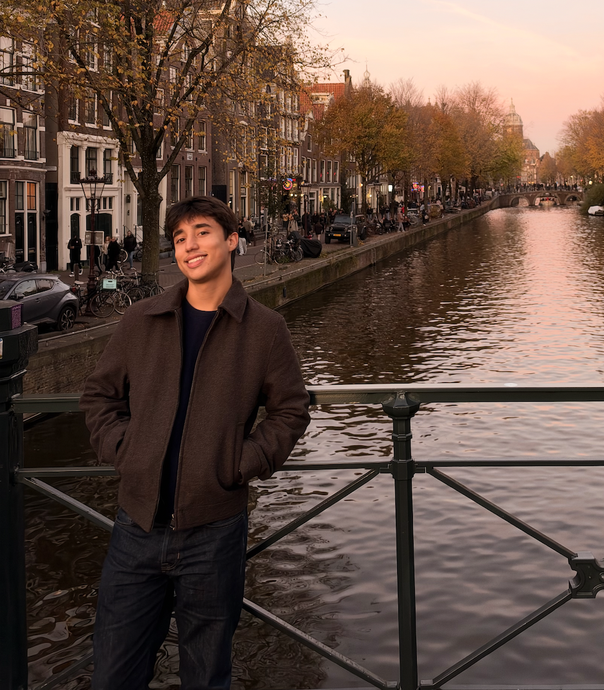
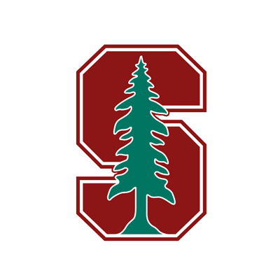
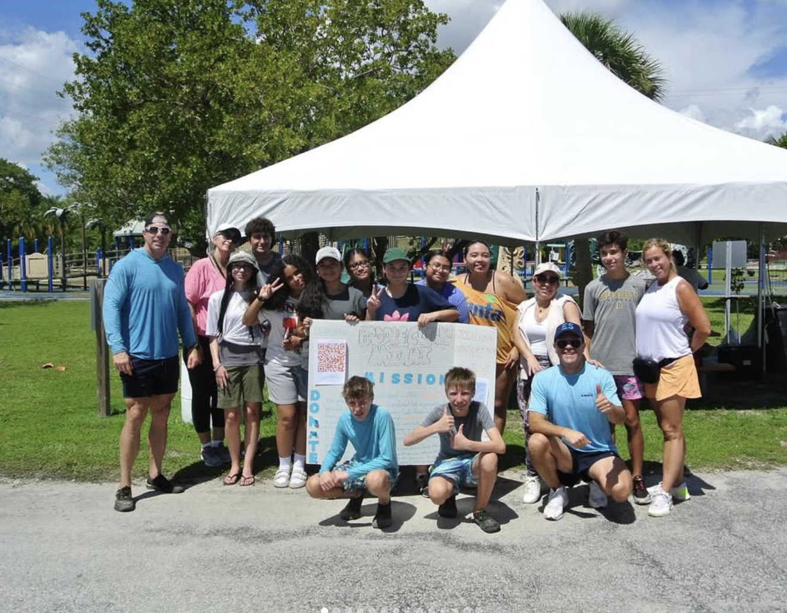
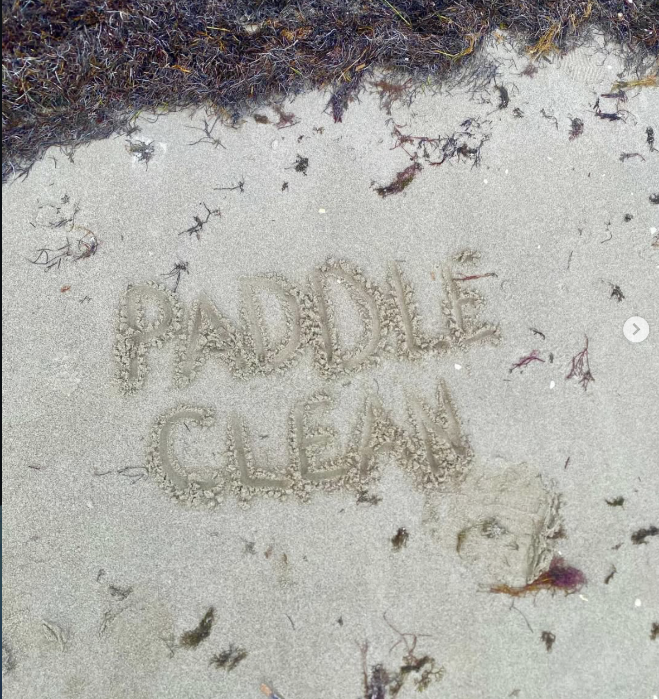
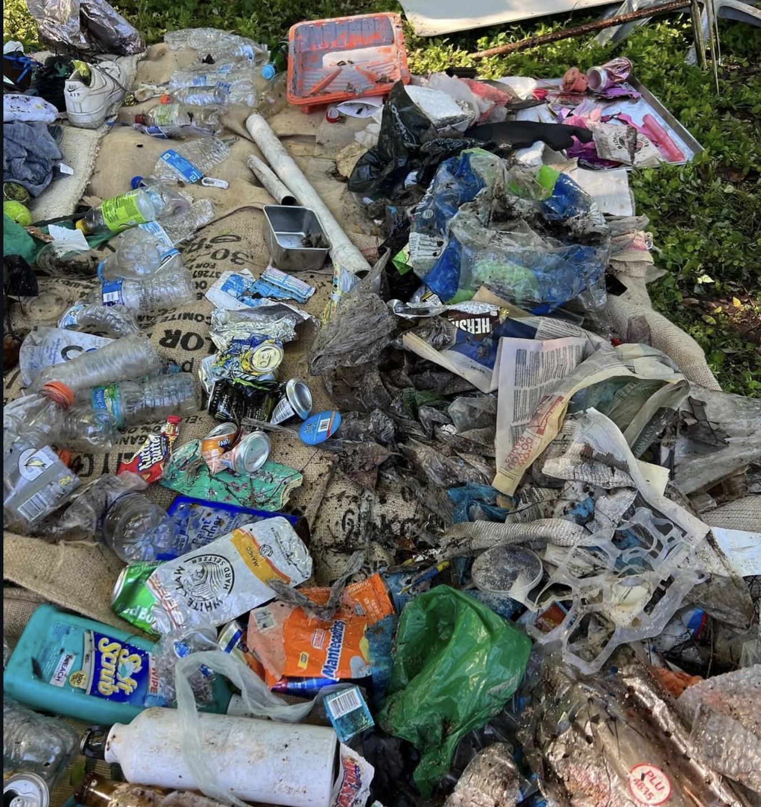
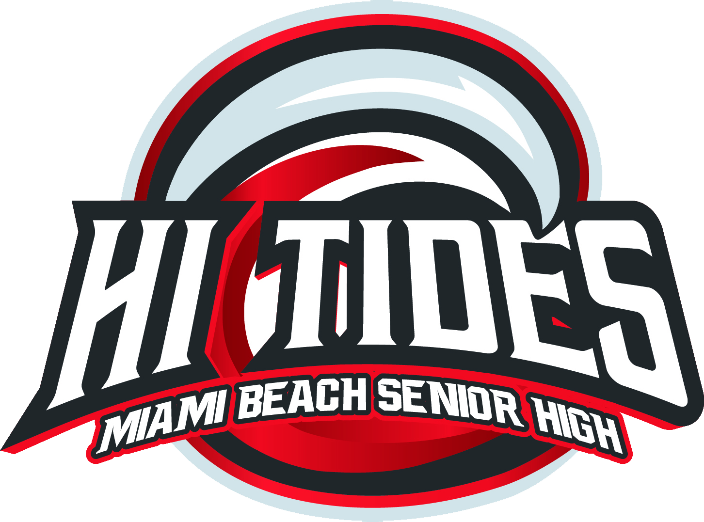
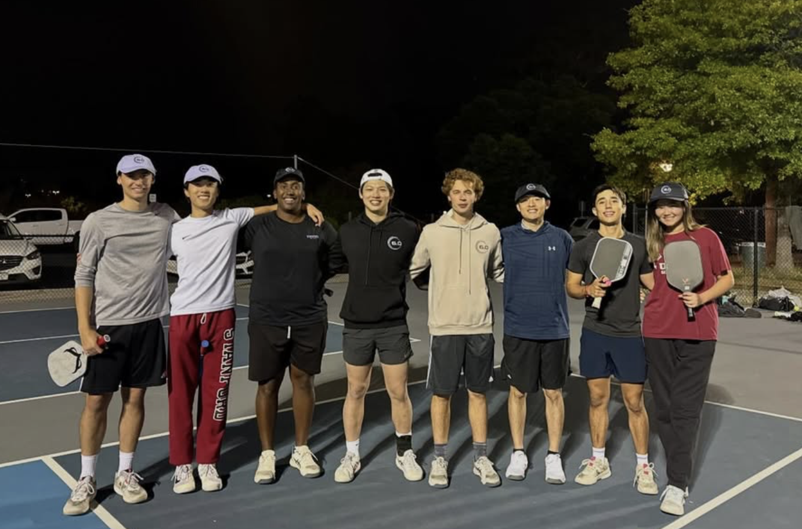
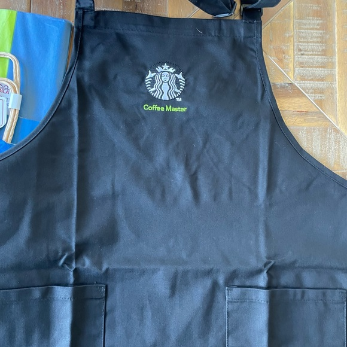

JPMorganChase
Incoming Global Finance & Business Management Summer Analyst
Economics & International Relations.
Interested in how business creates opportunity.
Incoming GF&BM @ JPMorganChase · Summer 2027
In Madrid with Stanford BOSP · Autumn 2026
Miami Beach / Stanford · English & Spanish

Incoming Global Finance & Business Management Summer Analyst
Consulting Extern
Completed a summer consulting externship with PwC in New York.
Finance & Business Intern
Analyzed customer cohorts, campaign performance, and fintech competitors across Latin America.
Career development apprenticeship · Feb 2025–Present
Advised 25+ students on applications, scholarships, and financial aid.
2021–2024 · Trained 10+ baristas, led 40+ coffee education sessions, and earned Employee of the Year recognition.

Behavioral Lab · Research Assistant
First-generation students & family relationships
Research on immigrant families, cultural expectations, and belonging among first-generation Latinx college students.
Featured initiative · Since 2021
Founder & Managing Director · Miami
I founded Paddle Clean Miami to bring young people together through paddleboarding and coastal cleanups, protecting the waterways I grew up around.



Wilbur Hall, Rinconada · Summer 2026. Supported residential programming and student engagement, including a talent show with 18 performances.
Office of Community Standards Undergraduate Representative · Haas Center Frosh Service Liaison · Sigma Phi Epsilon Social Chair and Rush Chair · The Stanford Daily writer.
Bachelor’s degree candidate · Economics & International Relations
QuestBridge National College Match Scholar.
Selected coursework Economic analysis (ECON 50, ECON 131), political science (POLISCI 116M, POLISCI 120B), and political communication (COMM 162/262).
Tools & methods R, Python, C++, survey analysis, qualitative interviews, and data visualization.
International experience Stanford BOSP Madrid · Stanford Global Seminar in Cape Town · Aplazo internship in Mexico City.

International Baccalaureate Diploma · Summa cum laude
Financial & Valuation Modeling
Credential ID 191232710
Equities Markets (EMC©)
Credential ID 191235516
A few things that don’t fit on LinkedIn.

I play on Stanford’s pickleball team and travel across the U.S. for tournaments. It’s one of my biggest passions.

I love drinking it, making it, and talking about it. I’ve worked at coffee chains and became the youngest Starbucks Coffee Master in the world at 16, earning my black apron.
Let’s connect.
Finance, strategy, research, and ideas worth building.